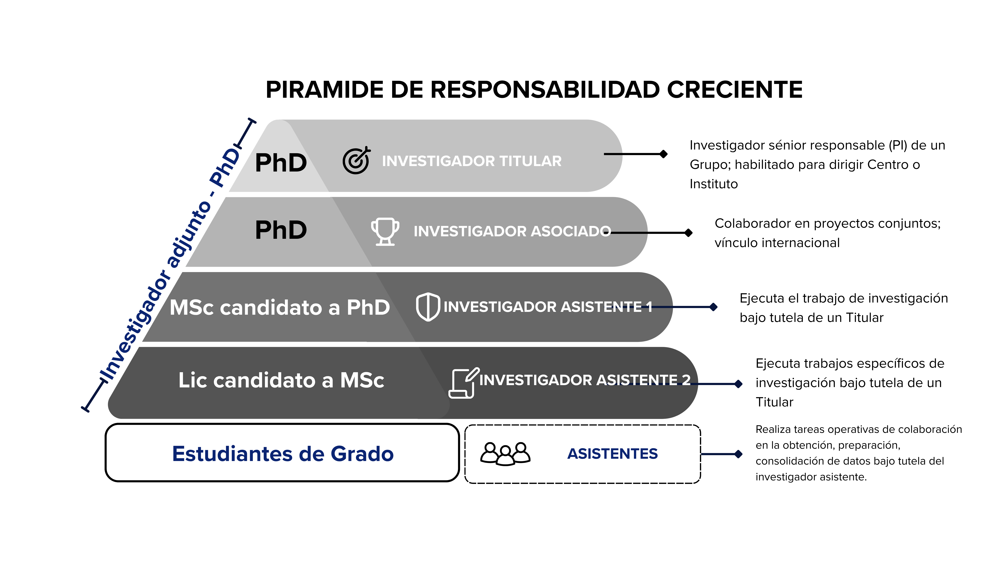
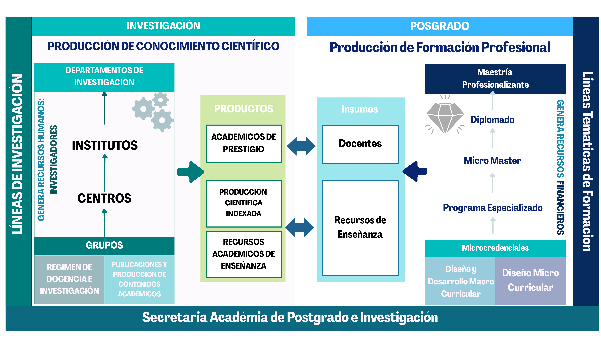
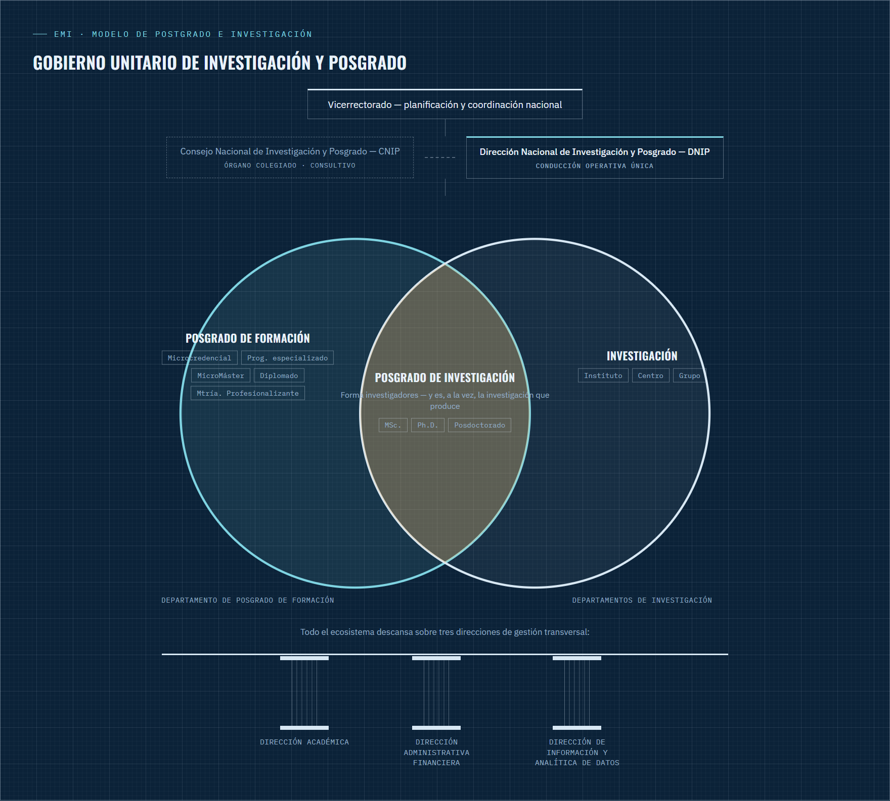

Blueprint — RAML Consultores
Escuela Militar de Ingeniería · "Mcal. Antonio José de Sucre"
Modelo de Postgrado e Investigación
CAPÍTULO 1 — PRODUCCIÓN DE FORMACIÓN POSGRADUAL E INVESTIGACIÓN
Fase 2 — Formulación del Modelo
Documento de trabajo — borrador en redacción
2026
Lámina00 / 15
- 01 Sistema de Formación Posgradual
- 02 Investigación y Producción Científica
- 03 Modelo de Posgrado e Investigación
- 04 Gestión Académica
Consultor: Ramiro Abdón Mamani Laime · 2026
desplazar
Mapa del capítulo
Cuatro bloques, un solo sistema
El Capítulo 1 desarrolla el "Core" académico que integra la formación posgradual, la investigación y la gestión académica — Producto 1 del Plan de trabajo de la Fase 2.
01
Sistema de Formación Posgradual
Unidad dual investigación–formación; Posgrado de Investigación (MSc, Ph.D., Posdoctorado) y Posgrado de Formación (microcredenciales a Maestría Profesionalizante).
02
Investigación y Producción Científica
Institutos, Centros y Grupos de investigación; áreas y líneas institucionales; claustro docente-investigador; indexación y spin-offs.
03
Modelo de Posgrado e Investigación
Síntesis gráfica: cómo investigación y formación operan como un solo sistema articulado.
04
Gestión Académica
Gobernanza unitaria (CNIP/DNIP), tronco común de datos, aseguramiento de calidad y posicionamiento en rankings QS.
12 cuadros normativos y más de 45 fuentes académicas sostienen el desarrollo del capítulo.
1.1 — Principio rector
Unidad dual investigación–formación
"en el posgrado se enseña lo que se investiga"Modelo Académico EMI (2025)
Investigación y posgrado son dos caras de un mismo proceso de conocimiento: producir, validar, enseñar, aplicar y transferir. Ningún programa de posgrado puede sostenerse sin una línea de investigación institucional activa que lo origine.
Posgrado de Investigación
Función: generar conocimiento científico y formar investigadores.
- Vínculo de origen con la investigación institucional
- Grados: MSc., Ph.D., actividad posdoctoral
- Perfil académico-investigador
- Funcionalidad: publicar en revistas indexadas
Posgrado de Formación
Función: transferir y expandir hacia la sociedad el conocimiento generado.
- Vínculo de insumo: aplica contenidos ya producidos
- Microcredencial, Diplomado, Especialidad, Maestría Profesionalizante
- Perfil profesional en ejercicio
- Funcionalidad: valor de perfil y promoción laboral
1.2.1 – 1.2.2 — Fundamentos
El grado académico como rito de paso
Un grado de Maestría Científica o Doctorado no es una licencia docente: certifica la capacidad de producir conocimiento nuevo, no solo de aplicarlo. Popper (1959) y Kuhn (1962) fundamentan esa capacidad como sometimiento del conocimiento a prueba rigurosa y, eventualmente, a la construcción de nuevos marcos explicativos.
Magister Scientiarum — MSc.
Primer peldaño de la práctica investigativa sistemática; antesala del Doctorado.
60 créditos1.800–2.400 h≥18 mesesTesis de Grado
Philosophiæ Doctor — Ph.D.
Agente autónomo de generación de conocimiento original; amplía la frontera disciplinar.
70 créditos2.100–2.800 h≥30 mesesTesis Doctoral
10% / 90%Horas lectivas / no lectivas del Doctorado (Art. 15, Reglamento SUB)
40% / 60%Horas lectivas / no lectivas de la Maestría Científica
50 de 400+Universidades AAU que concentran ~50% de los doctorados en EE. UU. (Nerad, 2008)
1.2.3 – 1.2.6 — Formación del investigador · Ilustración 2
El discipulado: maestro y discípulo
La investigación no es una tarea individual: se forma por acompañamiento directo de un investigador sénior, bajo una pirámide de responsabilidad creciente — el mismo esquema que da origen al Grupo de Investigación.

Ilustración 2 — Pirámide de responsabilidad creciente (apartado 1.2.3, fuente: elaboración propia)
Palabras clave
Investigador Titular — PhDInvestigador sénior responsable (PI) de un Grupo; habilitado para dirigir Centro o Instituto.
Investigador Asociado — PhD externoColaborador en proyectos conjuntos; vínculo internacional, sin plaza permanente.
Asistente 1 — MSc, candidato a PhDEjecuta el trabajo de investigación bajo tutela directa de un Titular.
Asistente 2 — Lic., candidato a MScEjecuta tareas específicas de investigación bajo tutela de un Titular.
Asistentes — estudiantes de gradoApoyo operativo en obtención, preparación y consolidación de datos.
Modalidades
Presencial de tiempo completo (referencia internacional) o blended: teoría virtual + actos que exigen copresencia (laboratorio, exámenes, defensa).
Convergencia internacional
Declaración de Seattle (2005): investigación original, 3–7 años de duración efectiva, examinadores externos, Graduate School como coordinación institucional.
Posdoctorado
No otorga grado académico. Es una etapa de práctica investigativa autónoma y tutelada entre el Doctorado y la condición de investigador sénior.
1.2.8 — Cuadro 1.2
Diferencia de naturaleza, no de jerarquía
Ningún programa puede diseñarse sin determinar primero a cuál columna pertenece: de ello dependen su finalidad, dedicación, financiamiento y contribución a la reputación institucional.
| Criterio | Posgrado de Investigación | Posgrado de Formación |
|---|---|---|
| Objeto formativo | Generar conocimiento nuevo: teoría, metodología original, innovación verificable | Aplicar con rigor conocimiento ya producido a la práctica profesional |
| Naturaleza del trabajo | Investigación autónoma bajo discipulado; no se mide en horas de clase | Enseñanza y aplicación guiada, en asignaturas/módulos |
| Horas lectivas / no lectivas | Doctorado 10/90 · Maestría Científica 40/60 | Diplomado 30/70 · Maestría Profesionalizante 40/60 |
| Financiamiento del estudiante | Asistencias de investigación/docencia, becas competitivas | Matrícula pagada por el propio posgraduante |
| Reputación que construye | Individual del investigador + institucional ante la comunidad científica | Institucional ante empleadores y sectores productivos |
1.3.1 — Cuadros 1.3 y 1.4
Posgrado de Formación: dos categorías
No genera investigación: su valor es la aplicación rigurosa de conocimiento ya producido a la necesidad profesional concreta.
Formación Continua — sin grado académico
- Curso corto — hasta 20 h, no certifica créditos
- Microcredencial — 20 a 40 h · 1 a 4 créditos acumulables
- Programa especializado — 4 a 7 microcredenciales + examen integrador (capstone)
Formación Académica Profesional — otorga grado
| Programa | Créditos | Graduación |
|---|---|---|
| Diplomado | ≥ 20 | Monografía |
| Especialidad Técnica | 25 | Trabajo de Grado |
| Especialidad Superior | 40 | Trabajo de Grado |
| Maestría Profesionalizante | 60 | Tesis / Trabajo de Grado |
| Esp. Clínico-Quirúrgica* | SNRM | Trabajo de Grado |
* donde corresponda al área de la oferta EMI, según el Sistema Nacional de Residencia Médica.
1.3.2 – 1.3.3 — Cuadro 1.5
Una escalera de créditos apilables
Evolución de la primera generación de MOOC (Stanford, 2011: 58.000 inscritos, <5% de finalización) hacia formatos verificados, pagados y acumulables — Specializations y MicroMasters del MIT, Harvard y Stanford.
Nivel 0
Microcredencial
1–4 créditos · 20–40 hNivel 1
Programa especializado
4–7 microcredenciales + capstoneNivel 2
MicroMáster
≥ 20 créditos acumuladosNivel 3
Diplomado Académico
MicroMáster + proyecto integradorNivel 4
Maestría Profesionalizante
reconoce hasta 40 de 60 créditosActivo de capital humano
Cada microcredencial o grado aprobado: unidad verificable de competencia.
Cuenta de ahorro académico
Registro individual de créditos, con ventana de caducidad de 3 a 5 años.
Tasa de Retorno Educativo
ROEI: costo de la ruta formativa frente al incremento de empleabilidad.
Clearing académico
Canje válido de un crédito emitido por una unidad en otra de mayor jerarquía.
1.3.4 – 1.3.5 — Producción y alcance
Del mercado por sede al mercado por reputación
Las líneas temáticas de producción deben ser un subconjunto de las líneas de investigación activas: nacen en los institutos/centros/grupos, se validan por la DNIP y se producen en la Unidad Microcurricular.
Presencial
Exigida donde la competencia no puede verificarse a distancia: laboratorio, defensa de tesis.
Virtual
Equilibra el alcance territorial entre sedes y Unidades Académicas Descentralizadas.
Blended
60–70% asíncrono autónomo + 30–40% síncrono de mentoría aplicada — modalidad de referencia.
MOOC
Formato de producción de la microcredencial de Nivel 0, nunca de un grado completo.
La escalabilidad no depende de dónde se produce el programa, sino de la calidad de producción, las alianzas estratégicas y la reputación construida en líneas temáticas sostenidas.
2.1 — Cuadros 1.6 y 1.7
Una escalera de constitución ascendente
Un Grupo nace primero; varios Grupos maduros se articulan en un Centro; varios Centros, en un Instituto. Ascender exige masa crítica y productividad verificable — nunca es una decisión discrecional.
Instituto de Investigación · macro
Captación de fondos de gran escala · política científica institucional
≥ 2 Centros · ≥ 6 Investigadores Titulares · 20 publicaciones indexadas en 3 años
Centro de Investigación · meso
Administra laboratorios y posgrado de investigación especializado
≥ 3 Grupos · ≥ 3 Titulares + 2 Adjuntos/Asociados · 6 publicaciones en 2 años
Grupo de Investigación · micro — célula operativa
1 Titular (líder) + 2 investigadores
3 publicaciones del líder en 5 años · 1 publicación/año desde el 2º año
Referente histórico: la Sociedad Max Planck (1948) administraba ~60 institutos de investigación básica (Clark, 1995).
2.2 – 2.3 / 2.6 — Cuadro 1.8
De la línea al Departamento, y el claustro que la sostiene
Área de Investigación
Campo disciplinar estable (p. ej. defensa, ingeniería aplicada). Aprobada por el CNIP; no se redefine en cada ciclo.
Línea de Investigación
Agenda dinámica de mediano plazo. Condición de entrada para toda Maestría, Especialización o Doctorado.
Departamento de Investigación
Aloja los Institutos, Centros y Grupos de una misma Área; origina toda maestría o doctorado de esa familia disciplinar.
| Categoría | Vínculo con la EMI | Función |
|---|---|---|
| Titular (de número) | Plaza permanente | Investigador sénior responsable (PI); dirige Centro o Instituto |
| Asociado (externo) | Sin plaza, colaborador por proyecto | Vínculo internacional y colaborativo |
| Asistente | Temporal, coextensiva con su posgrado | Ejecuta la investigación bajo tutela (discipulado) |
| Adjunto | Contrato por periodo y producto | Capacidad científica específica no disponible entre Titulares |
Carrera interna: Asistente → Adjunto → Titular, por concurso de méritos y productividad verificable.
3 — Síntesis gráfica · Ilustración 1
Investigación y posgrado como un solo sistema
La producción científica se convierte en materia prima docente; la oferta de formación genera, a su vez, los recursos que retroalimentan la investigación.

Ilustración 1 — Esquema gráfico del Modelo de Posgrado e Investigación de la EMI (apartado 3.3, fuente: elaboración propia)
Palabras clave
Departamentos · Institutos · Centros · GruposEscalera de constitución ascendente de la investigación institucional.
ProductosAcadémicos de prestigio, producción científica indexada, recursos de enseñanza.
InsumosDocentes y recursos de enseñanza que alimentan la formación.
Líneas de investigación / temáticasEnmarcan y orientan, respectivamente, cada columna del modelo.
Microcredencial → MaestríaEscalera de producción de formación profesional, de base a cúspide.
Secretaría AcadémicaGestión transversal que sostiene, en la base, ambas columnas.
Internacionalización
Triple Hélice universidad–industria–gobierno (Etzkowitz & Leydesdorff, 2000): convenios, coautoría y movilidad como condición de acceso a los circuitos de validación del conocimiento.
Spin-offs y transferencia
Toda línea activa debe poder generar spin-offs universitarias: la transferencia tecnológica nunca se desconecta del ecosistema de investigación y posgrado.
4.1 — Cuadro 1.9
Gobierno unitario: dos conjuntos, un mismo sistema
La investigación y la formación no se gobiernan como líneas de mando separadas, sino como dos conjuntos que se intersectan. El Posgrado de Investigación —Maestría Científica, Doctorado, Posdoctorado— es exactamente esa intersección: forma investigadores, pero su actividad misma es la investigación que produce.

Ilustración 3 — Gobierno unitario de investigación y posgrado (apartado 4.1, fuente: elaboración propia)
Palabras clave
VicerrectoradoPlanificación y coordinación nacional del sistema.
CNIPConsejo Nacional de Investigación y Posgrado — órgano colegiado consultivo.
DNIPDirección Nacional de Investigación y Posgrado — conducción operativa única.
Posgrado de Formación ∩ InvestigaciónDos conjuntos que se intersectan: la intersección es el Posgrado de Investigación.
Tres direcciones de soporteAcadémica, Administrativa-Financiera e Información, que sostienen todo el ecosistema.
4.2 – 4.3 — Cuadros 1.10 y 1.11
Un tronco común de datos, no sistemas aislados
Ningún lineamiento del Modelo es ejecutable si la información permanece dispersa en hojas electrónicas. Un mismo dato se captura una vez en su origen y se reutiliza en todos los módulos (Rogers, 2016).
Registro académico de posgrado
Kardex docente
Billetera digital de créditos
Líneas · Institutos · Centros · Grupos
Producción científica indexada
Claustro docente-investigador
Registro financiero
Contabilidad en tiempo real
Internacionalización y rankings
Posgrado de Investigación
% de tesis con examinador externo; tiempo de titulación frente al estándar de 4–7 años.
Posgrado de Formación
Tasa de finalización de microcredenciales; reconocimiento por empleadores.
Producción científica
% de artículos indexados sobre el total de investigadores; citas por investigador.
4.4 — Cuadro 1.12
Incidencia directa sobre la metodología QS
El posicionamiento en rankings de prestigio mundial (MIT, Oxford, Stanford, Harvard, ETH Zürich) depende, en más de la mitad de su peso, de la producción científica que este Modelo organiza.
Investigación 50%
Empleabilidad 20%
Global 15%
Aprendizaje 10%
5%
Reputación académica (30%) + Citas por docente (20%)
Reputación entre empleadores (15%) + Resultados de empleo (5%)
Docentes, red y estudiantes internacionales (5% c/u)
Ratio estudiante/docente
Sostenibilidad
Masa crítica de Titulares, Asociados, Asistentes y Adjuntos (Cuadro 1.7) alimenta directamente el ratio estudiante/docente de la metodología QS (2026).
Cierre
Una sola factoría de conocimiento
El Modelo no crea una oferta académica paralela: traduce el principio de unidad dual —investigación y posgrado como dos caras de un mismo proceso— en un sistema operable, clasificado y verificable, con una sola gobernanza, un solo tronco de datos y un mismo propósito de reputación científica internacional.
Capítulo 1 — Modelo de Postgrado e Investigación, Escuela Militar de Ingeniería · Fase 2, Acción 1 · Documento de trabajo en redacción, 2026.
DocumentoModelo de Posgrado EMI
Sección—
Lámina01 / 16
Fase2 · 2026